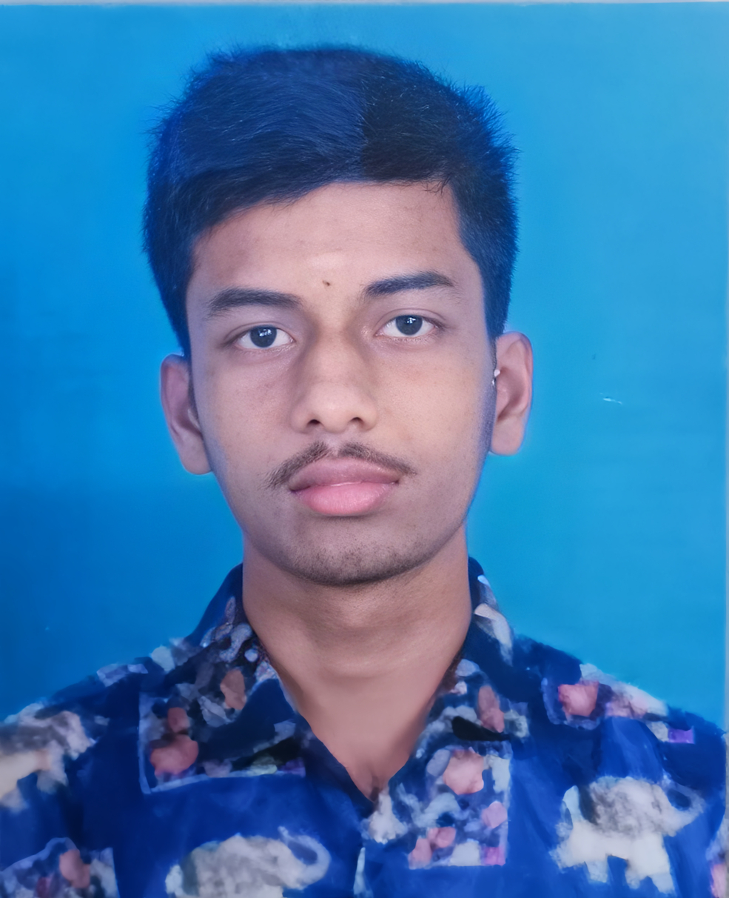

Objective
Seeking a Graduate Engineer Trainee (Mechanical) role in manufacturing and quality, where I can apply mechanical fundamentals, learn industrial processes, and contribute to continuous improvement on the shop floor.
Education
- B.E Mechanical Engineering – TPGIT, Vellore (77.2%)
- HSE – Sri VDS Jain HSS (75.8%)
- SSLC – Bhagavan HSS (80.8%)
Internship Experience
Brakes India Private Limited
Exposure to foundry operations, pyrolysis processes, die manufacturing, and automotive component production while following shop-floor safety standards.
MK Autocomponents India Limited
Hands-on experience in clutch and brake manufacturing, machining, forging operations, and basic quality inspection.
Skills
Technical: AutoCAD, SolidWorks, Engineering Metallurgy, Foundry Operations, Basic GD&T
Soft: Teamwork, Adaptability, Leadership, Communication
Workshops & Activities
- AI & ML in Hydrogen Materials – VIT
- Product Design & Development – TPGIT
- 3rd Prize – Tamil Speech Competition
- District-level Chess Tournament (2017)